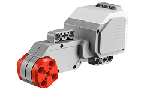
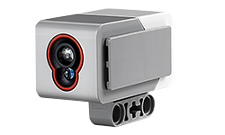

Движение по линии
Основные требования к соревнованию движения роботов по линии:
- 1. Робот, участвующий в соревновании, должен быть автономным роботом, способным двигаться от начала (старта) до конца (финиша) по заданной траектории.
- 2. Максимальная продолжительность времени, необходимого для движения по линии, не должна превышать две минуты
- 3. Во время проведения соревнования робот движется вдоль черной линии по полю и должен набрать максимальное количество очков за минимальное количество времени.
Требования, предъявляемые к роботу:
- 1. Размеры робота 25 х 25 х 25 см и вес не более 1 кг
- 2. После начала соревнования робот должен быть полностью независимым.
Способ сборки, и как программировать:
- 1. В программе нужно использовать бесконечный цикл для постоянного перемещения робота EV3 вдоль черной линии. Чтобы робот не вышел за пределы черной линии, нам нужен датчик цвета. Можно оснастить одним датчиком цвета или двумя датчиками цвета робота, который будет двигаться по линии. Датчики и моторы необходимые для робота:  
- 2. Датчик цвета должен быть установлен в центре передней части робота.
- 3. Если робот с датчиком входит на черную линию, то он выходит, повернувшись первым мотором.
- 4. Если робот с датчиком не увидел черную линию и вышел за ее пределы, то он поворачивает к линии вторым мотором и возвращается к ней. Робот движется по черной линии вдоль изогнутой линии.